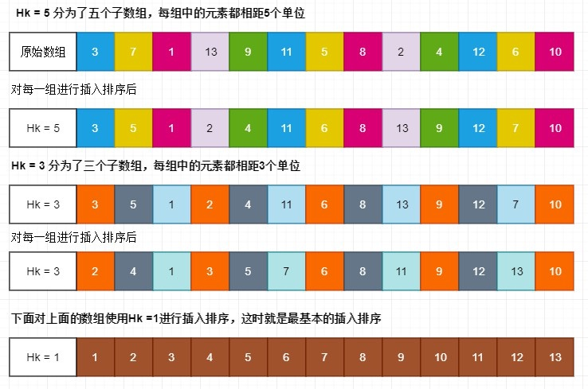

插入排序（Insertion Sort）和希尔排序（Shell Sort）
插入排序（Insertion Sort）和希尔排序（Shell Sort）
1. 插入排序 Insertion Sort
1. 算法思想
插入排序的代码实现虽然没有冒泡排序和选择排序那么简单粗暴，但它的原理应该是最容易理解的了，因为只要打过扑克牌的人都应该能够秒懂。插入排序是一种最简单直观的排序算法，它的工作原理是通过构建有序序列，对于未排序数据，在已排序序列中从后向前扫描，找到相应位置并插入。
插入排序和冒泡排序一样，也有一种优化算法，叫做拆半插入。
2. 算法步骤
- 将第一待排序序列第一个元素看做一个有序序列，把第二个元素到最后一个元素当成是未排序序列。
- 从头到尾依次扫描未排序序列，将扫描到的每个元素插入有序序列的适当位置（如果待插入的元素与有序序列中的某个元素相等，则将待插入元素插入到相等元素的后面）。

3. 算法实现
1 | void insertion_sort(int arr[],int len){ |
2. 希尔排序 Shell Sort
1. 算法思想：
希尔排序按其设计者希尔（Donald Shell）的名字命名。希尔排序通过多次插入排序来实现。它通过比较相距一定间隔的元素来工作；各趟比较所用的距离随着算法的进行而减小，直到只比较相邻元素的最后一趟排序为止。所以希尔排序也叫缩减增量排序。
希尔排序，也称递减增量排序算法，是插入排序的一种更高效的改进版本。但希尔排序是非稳定排序算法，而插入排序是稳定排序算法。
希尔排序是基于插入排序的以下两点性质而提出改进方法的：
- 插入排序在对几乎已经排好序的数据操作时，效率高，即可以达到线性排序的效率；
- 但插入排序一般来说是低效的，因为插入排序每次只能将数据移动一位；
希尔排序的基本思想是：先将整个待排序的记录序列分割成为若干子序列分别进行直接插入排序，待整个序列中的记录”基本有序”时，再对全体记录进行依次直接插入排序。
2. 算法步骤
使用一个序列h1,h2,….ht,叫做增量序列。任何增量序列都是可行的，前提是 h1 必须等于 1。在使用增量hk排序后，对于每一个i 我们都有a[i]<=a[i+hk]；所有相隔hk的元素都被排序，这称为hk排序。只要最后h1=1（这时就是最普通的插入排序）,希尔排序都可完成工作。一趟hk排序就是对hk个子数组进行插入排序。
选择一个增量序列 t1，t2，……，tk，其中 ti > tj, tk = 1；
按增量序列个数 k，对序列进行 k 趟排序；
每趟排序，根据对应的增量 ti，将待排序列分割成若干长度为 m 的子序列，分别对各子表进行直接插入排序。仅增量因子为 1 时，整个序列作为一个表来处理，表长度即为整个序列的长度。
3. 排序过程
选择一个增量序列h1,h2,….ht，h1=1。
根据增量序列个数，即循环t次进行排序，每次排序结束后更换为ht-1的增量。
把原数组分为ht个子数组，对每个子数组进行插入排序。
下面我们使用增量序列1、3、5对序列 {3, 7, 1, 13, 9, 11, 5, 8, 2, 4, 12, 6, 10}进行希尔排序的图解。每种颜色代表一个子数组，很直观看到每一趟排序过程及结果。
java实现冒泡排序：代码中我们使用希尔建议的增量序列（效率不高）,ht=N/2和hk=hk+1/2。
1
2
3
4
5
6
7
8
9
10
11
12
13private static <T extends Comparable<? super T>> void shellsort(T[] a) {
int j;
T tmp = null;
for (int gap = a.length / 2; gap > 0; gap /= 2) {
for (int i = gap; i < a.length; i++) {
tmp = a[i];
for (j = i; j >= gap && tmp.compareTo(a[j - gap]) < 0; j -= gap) {
a[j] = a[j - gap];
}
a[j] = tmp;
}
}
}
4. 时间、空间复杂度及稳定性分析：
希尔排序的运行时间依赖于增量序列的选择，而证明很复杂【有兴趣可查看其他资料】。
使用希尔增量时希尔排序最坏时间复杂度是：O(n^2)。
使用Hibbard增量的希尔排序最坏时间复杂度是：O(n3/2)；最优时间复杂度是O(n5/4)。
使用Sedgewick 增量序列,排序最坏时间复杂度是：O(n4/3)；平均时间复杂度是O(n7/6)。最好的序列是{1,5,19,41,109……}。该序列中的项或者是9 * 4i - 9 * 2i +1的形式，或者是4i - 3* 2i+1)的形式。
空间复杂度：只用到一个临时变量，所以空间复杂度为O(1)；
稳定性：不稳定排序。因为每一趟的步长不一样，所以步长长的插入排序可能会把后面的元素插入到前面。
5. 总结
希尔排序通过使用增量序列来将原始序列分为多个子序列，对每个子序列进行插入排序。只要最终增量序列h1=1,希尔排序都可正常工作。希尔排序时间严重依赖于增量序列的选择，我们可以直接先将好的增量序列表存在数组中，这样不用每次排序都去计算。